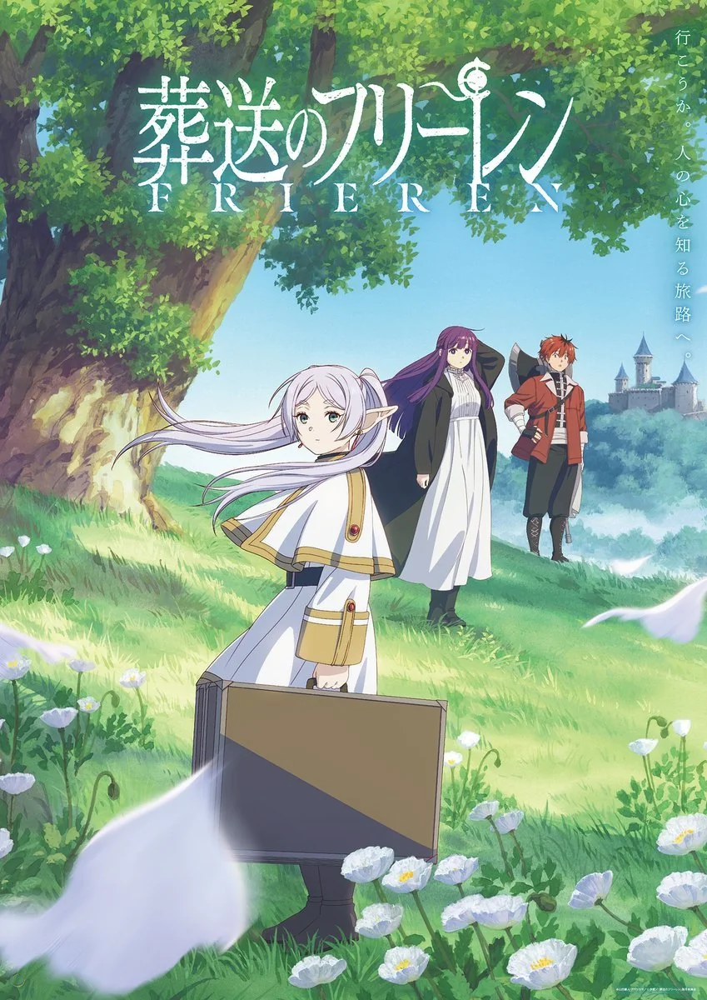

About Me!
Hello! This is where i will share information about myself.
My Skills and Interests
This is where I will share my skills and interests. I'll also put pictures and organize them here
My Interests
Final Fantasy XIV
I want to give Final Fantasy XIV a seperate entry aside from games, purely because of how big of an impact it's had on my life and what it means to me.
Gaming
Gaming is a huge part of my life, It's something that's been around in my earliest memories, and will be a constant for the remainder of my life as well.

Anime
Anime is also something that has been a constant in my life, it's something my cousin introduced to me when I was around 12 years old. And it remains a constant source of bonding between us many years later. Frieren is one my favorites due to how healing the story and the beauty in the art direction and music.
My Projects
This is where I will share my projects.